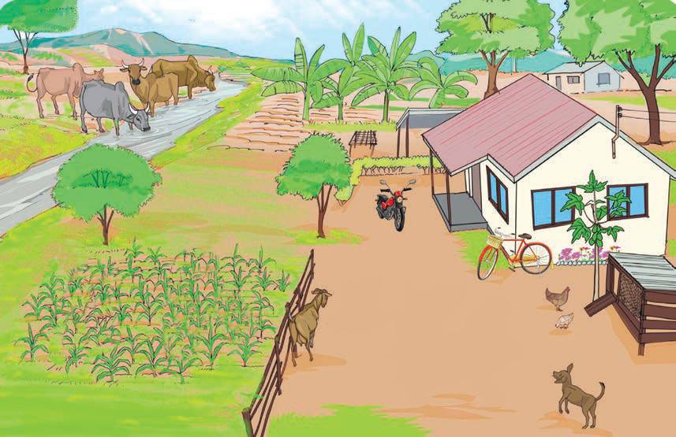

Chunguza picha ifuatayo kuhusu mazingira au sikiliza maelezo yake, kisha jibu maswali.

Maswali
1.Bainisha vitu vilivyoelezwa au vinavyoonekana katika picha.
2.Chagua kitu kimoja kilichoelezwa au kinachoonekana katika picha, kisha eleza kwa nini unakipenda.